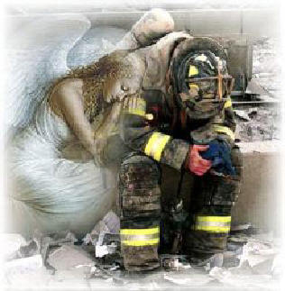

You are visiting 's website in the community. If you would like your
own free website, please Join!
I started this webpage 3 days after 9-11. I didn't know what
else to do... like many people, I was in shock. I realized how fortunate
I am to have my family close. But also, how much I miss those who passed on.
In the days following 9-11, so many poems popped up on the web, in
emails...expressing how we should tell the ones we love, how much we love
them, everyday; because we don't know what tomorrow will bring. And it
makes us ponder...did we say it enough to those who are gone? Unfortunately,
we can't say it to them now...
The Bible says "the dead, they are
conscious of nothing" (Ec 9:5) I won't be able to say those 3 little words
after I'm gone... And one day, when I depart this body/life/world, I want
this site up for the ones I love...to visit now and then...to smile, to
remember. And to know...I love you! your, wife, mom, sister, niece,
cousin, friend.
This Dove
is for my dad and all those who were not survivors of cancer, and their
families! This ribbon is here for my dear friend Claras husband,
John! Until they find a cure!
If Tomorrow Never Comes.... If I knew it would be the last
time that I'd see you fall asleep, I would tuck you in more tightly
and pray the Lord, your soul to keep.
If I knew it would be the last
time that I see you walk out the door, I would give you a hug and kiss
and call you back for one more.
If I knew it would be the last time
I'd hear your voice lifted up in praise, I would video tape each action
and word, so I could play them back day after day.
If I knew it
would be the last time, I could spare an extra minute or two to stop and
say I love you, instead of assuming you would KNOW I do.
If I knew
it would be the last time I would be there to share your day, well I'm
sure you'll have so many more, so I can let just this one slip away.
For surely there's always tomorrow to make up for an oversight,
and we always get a second chance to make everything alright.
There will always be another day to say our I love you's, And
certainly there's another chance to say our "Anything I can do's?"
But just in case I might be wrong, and today is all I get, I'd
like to say how much I love you and I hope we never forget,
Tomorrow
is not promised to anyone, young or old alike, And today may be the last
chance you get to hold your loved one tight..
So if you're waiting
for tomorrow, why not do it today? For if tomorrow never comes,
you'll surely regret the day,
That you didn't take that extra time
for a smile, a hug, or a kiss and you were too busy to grant someone,
what turned out to be their one last wish.
So hold your loved ones
close today, whisper in their ear, Tell them how much you love them
and that you'll always hold them dear,
Take time to say "I'm sorry,
please forgive me," "thank you" or "it's okay". And if tomorrow never
comes, you'll have no regrets about today.
~Author Unknown...~
In Loving Memory
Loving dad; Raymond David
Jodway August 5, 1935- Sept. 1985
Loving mom; Marie (McCoy)
Jodway September 1, 1936- Oct. 1990
Dear li'l sis; Kathleen Louise
Jodway December 14, 1965- Feb.
1998
Devoted dad/father-in-law;
Gary L. Haskell Semptember 1, 1933- Mar. 2000 Veteren of Korean
War
Friends & loved ones who have passed on since 2004: Ella
(Jodway) Wood-Aunt, January 2004 (predeceased by her husband Don) Dee
(Jodway) Davis-Aunt, 5/6/37-4/26/04 (predeceased by her husband Richard)
Robert Shaw-Uncle Bob, 12/6/29-6/30/04 Carl Rogers-father to Shanas
friend April, 10/5/56-9/8/04 John Jamison-Friend, 1/5/48-9/25/04 Roger
Whipple-Friend, 10/11/34-3/11/05 Eleanor (Jodway) Bridget-Aunt,
7/23/20-6/26/05, (predeceased by her husband Jerry)
I'd like to extend my
condolences to the families and friends who have lost loved ones
Tuesday Sept. 11, 2001. "Author Unknown by Request"
Condolences and heartfelt thank yous are
extexnded to the firefighters and all rescue workers and their families!

You will always walk with Angels by your sides! They
are your brothers and sisters. God Blessed them! And God Bless and protect
you!
I've Seen
The Angels Cry
I have always thought that angels wore halos and
wings of white But now I find they wear hard hats and black coats with
yellow stripes
And angels, in my mind, wore long flowing gowns of
white But now I see dark pants and shirts and badges shining bright
And angels always floated with bare feet above the ground Not
true! For they wear steel toed boots and go where death is found
Not
all angels have smooth hands that look like porcelain Some angels have
torn gloves and cuts and burns upon their skin
And while I thought
all angels glowed from heavens light I see an angel cutting steel
his torch is shining bright
And while these earthly angels
passed buckets of debris The angels up in heaven looked down on
bended knee
So while the smoke continued to rise into the sky I
watched the rescue workers weep I've seen the angels cry Bonnie McDaniel
17, Sept 2001